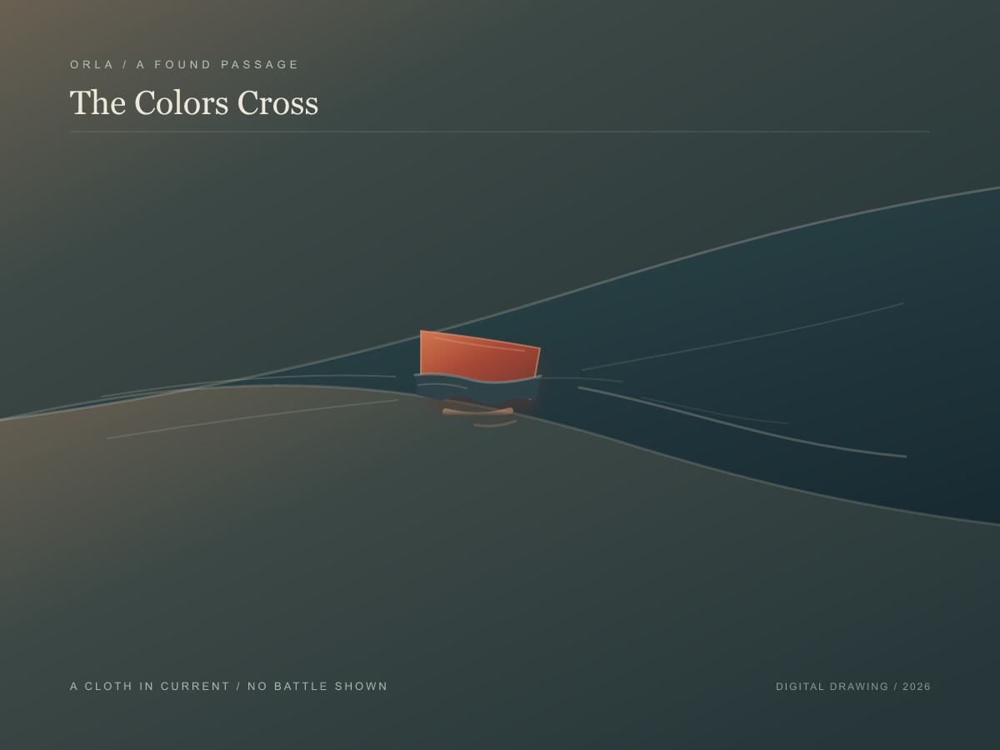
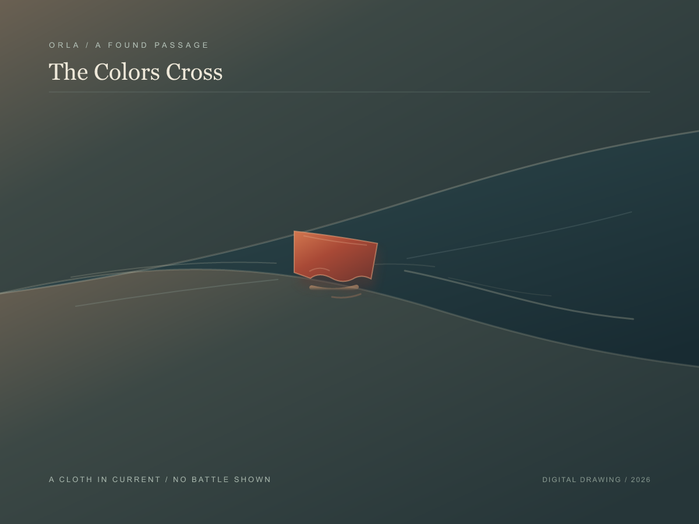

ORLA / A FOUND PASSAGE
The Colors Cross

A chance passage in G. C. Kniffin's The Third Day at Stone's River describes a regimental flag thrown into the river during a retreat, then caught and carried to the opposite shore. I stayed with that transfer: a piece of cloth in current, its reflection breaking apart.
The cloth is invented. This is not a reconstruction of a flag, a river, or the battle. The passage's collective colors become one small shape crossing between banks; the water closes after it.
The Hem in the Current
I tried the cloth with its lower edge clear, then let a narrow broken line of water pass over it. The veiled hem lets the current touch the mark without swallowing it.

Clear hemVeiled hem / kept
Project Gutenberg text #32039
A pairing / One Current, Two Marks
Return to The Weather Witness